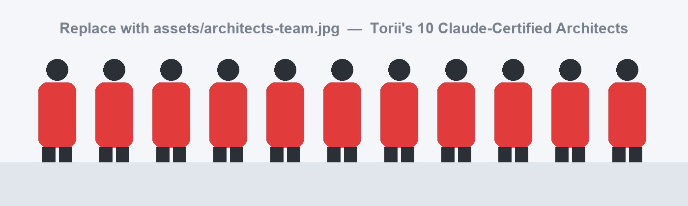

Claude Foundations
Understanding Claude's capabilities, limitations, model behaviour, and responsible usage from the ground up.
When Torii set out to deliver Claude-powered training and engineering at industry standard, it invested in its people first — partnering with Technical Hub to turn abstract AI potential into concrete, repeatable developer workflows.
In a technological landscape that shifts faster than most organisations can re-tool, competitiveness no longer depends on the software you buy — it depends on how quickly your people can master it. Recognising this, Torii entered a strategic alignment with Technical Hub to fundamentally transform its corporate execution, training frameworks, and engineering output.
Technical Hub has been instrumental in deeply training and upskilling the Torii team with specialised, Claude-relevant competencies. Through structured curricula, hands-on labs, and rigorous validation, abstract AI capability was converted into practical, day-to-day fluency — the kind that holds up under the demands of real client delivery rather than living only in a slide deck.
Today, as a direct result of this partnership, our workforce is fully prepared to deliver high-tier corporate training that aligns perfectly with modern, rigorous industry standards. By turning abstract AI potential into concrete developer workflows, Technical Hub has structurally augmented Torii's organisational performance and operational market speed.
The programme was designed to move beyond basic tool awareness and build a practical, industry-ready AI adoption framework. Training centred on prompt engineering, context engineering, AI-assisted coding, workflow automation, debugging support, and the responsible use of Claude in professional environments.
Through hands-on sessions, guided demonstrations, and real-time practice, the Torii team gained the confidence to use Claude not just as a chatbot, but as a genuine productivity partner — for training delivery, software development, documentation, and enterprise problem-solving.
 Setting the vision — Torii's AI-integrated training plan, presented live
Setting the vision — Torii's AI-integrated training plan, presented live
Before this engagement, delivering cutting-edge AI guidance at Torii meant navigating disjointed syllabi, unvetted materials, and inconsistent practices. The opportunity was obvious; the path to capturing it was not.
Promising ideas stalled in translation. Trainers lacked a single, validated source of truth, and engineers experimented with AI in isolation rather than as part of a shared, repeatable workflow. Torii needed more than another tool — it needed a standardised, certifiable way to build genuine Claude expertise across the entire organisation.
No single, validated curriculum to anchor AI instruction.
Quality and accuracy varied from one session to the next.
Developers used AI ad hoc, not as a shared workflow.
The engagement moved Torii from experimental AI usage to a structured, confident, and scalable adoption model — with a shared understanding of how Claude supports training, development, and enterprise productivity.
 The Torii delivery team — fully certified & enterprise-ready
The Torii delivery team — fully certified & enterprise-ready
To scale Torii's market reach, Technical Hub designed an intensive train-the-trainer framework centred around Claude's robust model architecture and capabilities. In place of fragmented resources, it established a comprehensive, standardised upskilling path — a single, dependable route from curiosity to certified competence.
Working track by track, the Torii delivery team moved through structured validation, peer-review simulations, and deep dives into Claude's advanced contextual windows. Trainers learned not just what the model does, but how to translate its underlying reasoning into clear, corporate-grade value. The team emerged certified, agile, and strategically positioned to deliver premium, enterprise-grade programmes that meet the strict criteria of today's tech sector.
The curriculum was built to develop Claude fluency from both a trainer's and a developer's perspective. Each module carried a single, clear outcome — to convert AI understanding into real-world execution.
Understanding Claude's capabilities, limitations, model behaviour, and responsible usage from the ground up.
Writing clear, role-based prompts with context, examples, constraints, and output formats — drawing on Anthropic's guidance around clarity, XML structuring, and prompt chaining.
Designing prompts and workflows that help Claude handle complex tasks, long documents, full codebases, and multi-step instructions.
Code explanation, bug fixing, refactoring, test generation, and scaffolding — with Claude Code as an agentic tool that reads codebases, edits files, and runs commands.
Converting AI concepts into simple, understandable classroom and corporate training sessions that learners can act on.

Every framework, lab, and line of guidance in this story traces back to one thing — people. At the heart of Torii's transformation stands a core team of ten Claude-certified architects: senior trainers and engineers who completed Technical Hub's full upskilling path and now carry that expertise into every engagement.

These architects are far more than certified users. Each has been validated across structured assessments, peer-review simulations, and live delivery — proof that they can translate Claude's advanced reasoning into production-grade workflows, mentor others, and uphold a single, consistent standard of quality. Blending instructional mastery with hands-on engineering, they bridge the gap between what AI can do in theory and what it delivers in practice.
Together they form Torii's centre of excellence for AI-assisted training and engineering — the bench of certified talent that makes our promise, Step IN, Stand OUT, repeatable at enterprise scale.
With the team now trained and certified, the impact extends directly to students, faculty members, and corporate learners. Torii is equipped to deliver Claude-based learning experiences that are practical, simple to understand, and aligned with current industry needs.

Training delivery is sharper, more consistent, and standards-aligned.
Concepts are shown live, not just described on a slide.
Learning materials are assembled in a fraction of the time.
Hands-on, AI-assisted formats keep learners involved.
A stronger link between classroom learning and real-world expectations.
Torii Minds proudly launched the AI Tech Coach initiative at Nagarjuna College of Engineering and Technology (NCET) — helping students build future-ready skills in Artificial Intelligence and emerging technologies.
The programme guides students in using AI tools effectively for learning, coding, project development, debugging, documentation, research, and real-world problem-solving. Through hands-on sessions, live demonstrations, and structured mentoring, students gain practical exposure to AI-powered workflows and responsible AI usage.
This initiative aims to create an AI-enabled learning environment at NCET, where students can improve productivity, strengthen technical confidence, and develop innovative projects aligned with industry expectations. The AI Tech Coach launch marks an important step toward preparing students to become skilled, creative, and industry-ready engineers in the AI-driven digital era.
Technical Hub did not merely implement a tool — they structurally rewrote Torii's productivity capacity.
 From concept to practice — Claude applied to live training & engineering work
From concept to practice — Claude applied to live training & engineering work
A major strength of the programme was its practical orientation. The team learned to apply Claude across real training and engineering scenarios — making AI adoption measurable, repeatable, and relevant to industry expectations.
 Dedicated, isolated technical tracks for core developers
Dedicated, isolated technical tracks for core developers
Beyond empowering Torii's instructional personnel, Technical Hub ran targeted, isolated technical tracks engineered specifically for our core software developers. These deep-dive sessions focused on a single outcome: showing engineers how to natively anchor Claude into their daily development environments, so that AI assistance becomes a default reflex rather than an occasional experiment.
The tracks delivered immense, measurable improvements across several core technical domains — from how code is written and reviewed to how quickly new ideas reach a working prototype.
Developers learned to leverage Claude for rapid codebase exploration, complex refactoring operations, and microservice creation — effectively minimising cognitive load on every task.
Sessions emphasised prompt-driven bug localisation, automated unit-test generation, and syntax validation, drastically reducing standard debugging cycles.
Engineering squads were equipped to safely spin up minimal viable products (MVPs), turning ideas into functional logic within hours rather than days.
The systemic integration of Claude into Torii's ecosystem, delivered through Technical Hub's frameworks, produced an immediate and positive spike across the company's operational KPIs.
By upskilling internal talent rather than outsourcing capability, Torii mitigated long-standing technical bottlenecks and compressed project-delivery timelines by a remarkable margin. Engineering overhead fell, output quality rose, and — most importantly — the transition future-proofed Torii's product pipeline, ensuring that every current and subsequent development practice is natively AI-assisted.
Bottlenecks removed across the project lifecycle.
Routine effort offloaded to AI-assisted workflows.
Consistent, reviewable, standards-aligned output.
All practices are now natively AI-assisted.
Beyond the metrics, the clearest signal of change is how the team now talks about working with Claude.
The Claude training helped us understand how AI can become a daily productivity partner — especially for content preparation, coding support, and student training.
The programme gave our team a clear structure to use Claude professionally, instead of experimenting at random.
We are now far more confident delivering AI-focused training with industry-level clarity and practical, real-world examples.
The transformation unfolded as a deliberate, four-stage progression — each step building on the last, from strategic intent to measurable, organisation-wide change.
Torii partners with Technical Hub to transform execution, training frameworks, and engineering output.
A standardised upskilling path built around Claude's architecture replaces unvetted materials.
Isolated technical deep-dives anchor Claude into daily engineering environments.
KPIs spike, timelines shrink, and the product pipeline is future-proofed.
Torii is a learning and engineering organisation built on a simple promise — Step IN, Stand OUT. It equips people and teams with the skills, platforms, and practices to thrive in an AI-first industry, pairing hands-on training with real engineering delivery. With its team now Claude-certified, Torii designs and delivers premium, enterprise-grade programmes for the modern tech sector.
toriiminds.com →Technical Hub is a workforce-transformation and upskilling partner specialising in turning emerging technology into job-ready capability. Through structured, train-the-trainer frameworks and developer-focused enablement, it helps organisations adopt tools like Claude with rigour, speed, and measurable results — converting potential into performance that lasts.
Workforce Transformation · Developer ProductivityAs AI becomes part of daily training and development, it has to be used with awareness, accuracy, privacy, and professional judgment. The team was encouraged to treat Claude as an assistant that augments human expertise — never a replacement for it.
Verify AI-generated content before delivery.
Avoid sharing sensitive or confidential information.
Use Claude for assistance, not blind automation.
Maintain human review across training & engineering output.
Follow responsible AI practices in academic & corporate settings.
Apply governance & data controls for enterprise-scale adoption.
The next phase scales Claude-powered enablement across students, faculty, and corporate teams — built around AI-assisted coding, prompt engineering, AI agents, automation, and productivity workflows.
The collaboration between Torii and Technical Hub stands as a premier example of how proactive corporate upskilling can revitalise a company's competitive position. By transforming our trainers into industry-certified AI educators and our developers into high-velocity engineers, Technical Hub didn't merely implement a tool — it structurally rewrote Torii's productivity capacity. We are now fully aligned with modern market standards, highly efficient, and equipped to lead what comes next.